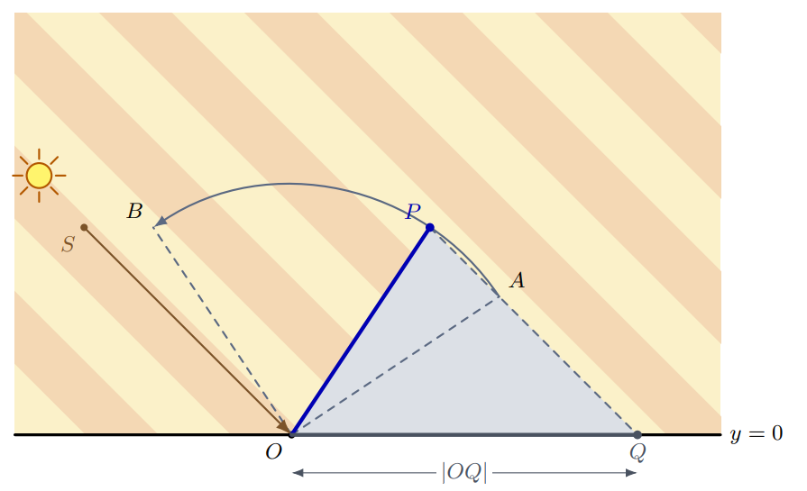

2026牛客暑期多校训练营10
A 夏日影 【卡精度 / “acos(1.0l), sqrt((ld)) 的必要性” / “C++模板参数影响返回值问题”】（归档）
Problem Description
二维平面上，一根定长直杆的一端铰接在地面上，可以在两个边界方向之间转动，且杆身始终位于地面上方。太阳光是沿固定方向传播的平行光。求杆在所有允许方向下影长的最小值和最大值。
图中， 是原点， 表示太阳光的传播方向，杆可以从 逆时针转动至 。当前杆为 ，此时影长为 。

Input
第一行包含一个整数 （），表示测试数据的组数。接下来是各组测试数据的描述。
每组测试数据包含六个整数 、、、、 和 ，分别确定 、 和 （；）。
保证 ，且 位于 的逆时针方向或与其重合。
Output
对于每组测试数据，输出两个实数，依次表示影长的最小值和最大值。
如果答案的绝对误差或相对误差不超过 ，则认为答案正确。
Sample Input
2
-3 3 3 2 -2 3
0 1 1 1 -1 1Sample Output
1.000000000000000 5.099019513592784
0.000000000000000 1.000000000000000Solution
- 见 Code
Code
#include<bits/stdc++.h>
using namespace std;
using ll = long long;
using ld = long double;
// 【坑点赏析1】 acos 如果你不加 l 默认用的是 double 精度低！
const ld pi = acos(-1.0l);
// const ld pi = acos(-1);
const ld eps = 1e-12;
int sign(ld x) {
if(x > eps) return 1;
if(x < -eps) return -1;
return 0;
}
int eq(ld x, ld y) {
return !sign(x-y);
}
int ge(ld x, ld y) {
return x > y || eq(x,y);
}
pair<ld,ld> cal(ld r, ld theta, ld alpha0, ld alpha1) {
ld L = theta+alpha0;
ld R = theta+alpha1;
ld st = abs(sin(theta));
ld sl = abs(sin(L));
ld sr = abs(sin(R));
ld ans1 = min(sl, sr) / st * r;
ld ans2 = max(sl, sr) / st * r;
if(ge(R*2,pi) && ge(pi,L*2)) ans2 = max(ans2, r / st);
if(ge(R*2,pi*3) && ge(pi*3,L*2)) ans2 = max(ans2, r / st);
if(ge(pi, L)&& ge(R, pi)) ans1 = 0;
return {ans1, ans2};
}
void solve() {
ll sx, sy, ax, ay, bx,by;
cin >> sx >> sy >> ax >> ay >> bx >> by;
// 【坑点赏析2】 sqrt 如果你不加 (ld) 即使用的是 long long
// 返回值其实是 double 精度低！
ld r = sqrt((ld)(ax*ax+ay*ay));
ld theta = acos(((-sx) / sqrt(ld(sx*sx+sy*sy))));
ld alpha0 = acos( (ax) / r);
ld alpha1 = acos( (bx) / r);
pair<ld,ld> p1 = cal(r, theta, alpha0, alpha1);
cout << p1.first << " " << p1.second << "\n";
}
int main() {
cout << fixed << setprecision(17);
ios::sync_with_stdio(0); cin.tie(0); cout.tie(0);
int T = 1;
cin >> T;
while (T--) solve();
}B 老虎机【结论题 / kth 期望公式】
Problem Description
游戏厅里有 台老虎机，编号为 。游戏开始时，每台老虎机最初的奖金都是从区间 中独立且均匀随机选取的一个实数。你的作弊手段可以让你在每次选择前看到所有老虎机当前的奖金。
你的策略是选择当前奖金最多的老虎机：奖金较多的老虎机排名更高，奖金相同时编号较大的老虎机排名更高。领取奖金后，被选中的老虎机会独立地从 中均匀随机生成一笔新的奖金。你的作弊手段会立刻告诉你新的数额，其他老虎机的奖金则保持不变。
求恰好游玩 次后，获得的奖金总额的期望。
Input
第一行包含三个整数 、 和 （，）。
Output
输出获得的 笔奖金总额的期望。如果答案的绝对误差或相对误差不超过 ，则认为答案正确。
Sample Input 1
1 10 3Sample Output 1
15.0000000000Sample Input 2
2 6 2Sample Output 2
7.5000000000Hint
在第一组样例中，机器只有一台。每次游玩获得的奖金期望为 ，因此奖金总额的期望为 。在第二组样例中，前两次游玩获得的奖金期望分别为 和 ，因此奖金总额的期望为 。
Solution
- 记结论
- 对于 个随机变量 取值范围均为实数区间 ，其中第 小的数字期望是
- 答案竟然是选最大的 k 个期望值，完了？
- 不知道为什么
Code
- 略